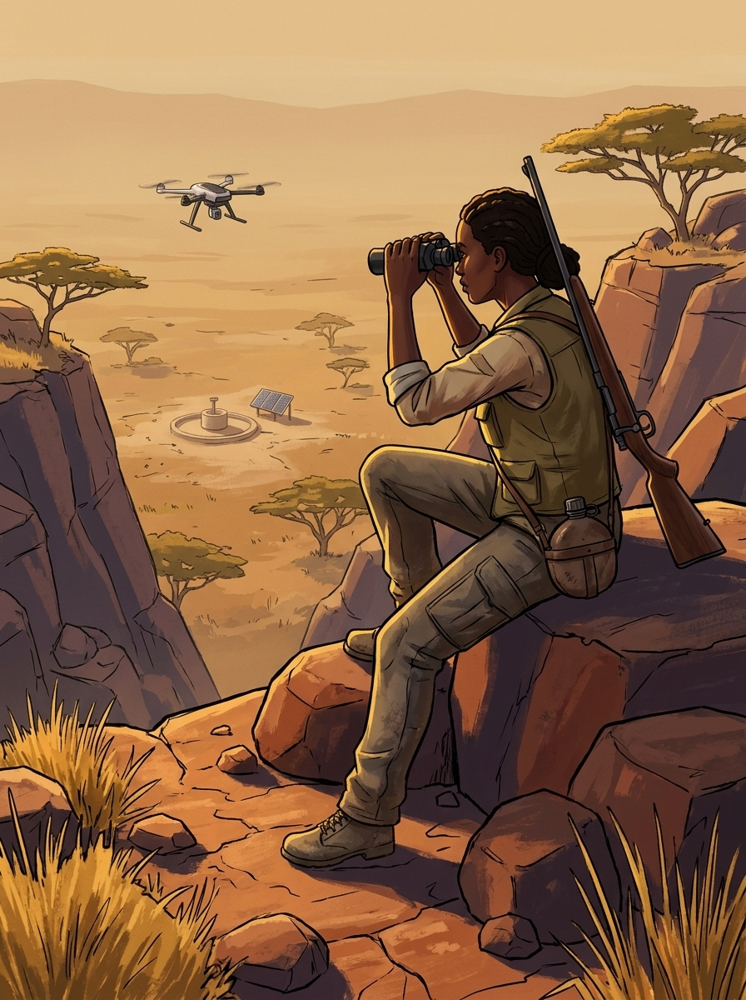

Lifepath Hobbies, Formative Life Events, 5-Faction Templates & Walkthroughs
Rust Engine Implementation:
crates/satya-engine/src/lifepath_hobbies_events.rs(PersonalHobbyId,FormativeLifeEventId,resolve_formative_life_event,is_hobby_club_discounted_skill),crates/satya-engine/src/faction_templates.rs(AwakenedFactionId,FactionArchetypeId,infer_faction_archetype_from_prompt),crates/satya-engine/src/lifepath_economy.rs,crates/satya-engine/src/lifepath_catalog.rs,crates/satya-engine/src/npc_generator.rs,crates/satya-engine/src/hook_weaver.rs, andcrates/satya-engine/src/walkthroughs.rs. Guided Play Example: See Guide 01: Walking the Lifepaths Roll-by-Roll and Guide 04: Social Combat & Faction Wedges.
Real human lives are shaped by far more than school transcripts and career résumés. Grief, lingering injuries, betrayal, romance, Saturday tabletop games, pickup soccer, late-night HAM radio nets, and sudden displacement carve out who a character trusts, what breaks them under interrogation, and who answers the phone when everything goes sideways.
This companion chapter extends Lifepath Character Creation, Upkeep & Heat and the 9-trait Psyche architecture in Characteristics & Aptitudes across four pillars: 1. Personal Hobbies, Clubs & Subcultures (12 canonical leisure tracks powered by Experience SP), 2. Formative Life Events (2d20 Table) covering tragedy, love, white-collar displacement, and anomalous AI encounters, 3. The 5 Awakened Faction Templates linking faction identity directly to Lifepath priors, 9-Trait Psyche profiles (TRS & CPS), and Social Combat wedges, and 4. Four Complete Worked Character Walkthroughs (Mateo Vance, Dr. Priya Nair, Amara Okafor, and Linnea Cho).
SQM Tier · Formal SP Pool
14 Canonical Career Tracks
12 Youth & Adult Leisure Tracks
Experience SP (-15% Club Discount)
Practical Analog Skills & Contacts
Injury · Bereavement · Romance
AI Layoff · Whistleblower Crossroads
Anomalous AI 2.0 Contact
EGO · SLF · OPN · BLG · EXT
CNF · AGG · Trust (TRS) · Compassion (CPS)
5 Awakened Faction NPC Templates
1. Beyond School & Work: Personal Hobbies, Clubs & Subcultures
Whereas career tracks spend Formal Training SP, human identity flourishes in what people do when nobody is paying them. Hobbies explain why a soft-spoken biotech Ph.D. knows SERE Meditation and Fencing, why a municipal clerk maintains an encrypted HAM Radio relay in their closet, or why a corporate auditor can trace a deepfake faster than DAISE forensics.
1.1 Hobby Acquisition Mechanics (Experience SP)
- Timing & Slots:• Adolescent Hobby / Club (Ages 12–18): Choose 1 Hobby (funded out of the starting
40 Experience SPYouth Pool).• Adult Off-Duty Hobby (Per 4-Year Term): Keep and deepen your Youth Hobby or pick 1 new Hobby per Career Term (funded out of each term's+40 Experience SPPractical Pool). - Club & Subculture Mechanical Benefits:• Signature Skill Discount (
-15%): Practicing two signature skills inside an active club, gym, band, or study circle applies a0.85xlearning multiplier onExperience SPpurchases (capped atN <= 3unless an instructor isN >= 4or career-linked).• Psyche Nudge (±1, optional): Living inside a subculture over years gently nudges one signature Psyche trait by1point toward that hobby's pole (e.g.,+1 CPSfrom years in Mutual Aid / Sangha,-1 TRSfrom Citizen OSINT).• Lived Social Contact: Every chosen hobby grants 1 grounded local Contact (Coach, Gym Sparring Partner, Bandmate, HAM Net Operator, Tabletop GM, Sangha Elder, or Range Safety Officer) whom the AI GM or human GM can weave into scenes without contrived plot hooks.
1.2 Master Catalog of 12 Canonical Hobbies & Subcultures
| Hobby / Club / Subculture | Signature Skills Advanced (Experience SP) | Attribute / Psyche Nudge | Contacts & Awakened 2035 Play Value |
|---|---|---|---|
| 1. Team Sports & Athletics (Soccer, Basketball, Rugby, Track) | Running, Jumping, Throwing (TAL), Team Coordination | +1 FIT or +1 BLG (max 1x) | Former teammates across precincts/hospitals; instinctive squad spacing and cardio under duress. |
| 2. Combat Sports & Martial Arts Gym (Boxing, Muay Thai, Judo/BJJ, HEMA) | Brawling or Grappling (Wrestling/BJJ) or Fencing/Blades, Pain Conditioning | +1 DIS or +1 AGG (max 1x) | Gym coaches, off-duty cops, SecOps trainees; realistic clinch/footwork defense without gun Heat. |
| 3. Tabletop RPG, Wargaming & Spec-Fic Club | Applied Statistics / Probability, History & Lore, Storytelling & Deception | +1 CRE or +1 OPN (max 1x) | Lifelong circle of eclectic specialists (coders, teachers, medics); rapid scenario modeling and pretext improvisation. |
| 4. Garage Band, Choir, DJing & Indie Music Scene | Musical Instruments, Singing, Audio Production, Streetwise / Venue Networking | +1 EXT or +1 CRE (max 1x) | Underground venues, tour vans, sound engineers, and unlicensed basement safehouses hidden from corporate telemetry. |
| 5. Debate Team, Mock Trial, Theater & Improv | Persuasion & Rhetoric, Acting, Disguise & Pretexting, Observation (Micro-Cues) | +1 ELO or +1 PRE (max 1x) | Journalists, public defenders, local council aides; natural cover identities and courtroom/boardroom composure. |
| 6. Amateur Radio (HAM), FPV Drones & Maker Club | Basic Electronics, Radio & Mesh Comms, Tactical/FPV Drone Piloting | -1 TRS or +1 FOC (max 1x) | Critical in 2035: un-monitored analog radio nets, custom air-gapped microcontrollers, and off-grid reconnaissance rigs. |
| 7. Indie Coding, CTF Hacking & Retro Hardware | Programming & Scripting, Digital OS Admin, Lockpicking & Hardware Hacking | +1 OPN, -1 TRS (max 1x) | Pseudonymous CTF peers, salvaged pre-2026 air-gapped laptops (vital against AI 2.0 network sweeps). |
| 8. Citizen OSINT & Deepfake Verification | Observation, Research & OSINT, Digital/Synth-Media Forensics, Photographic Analysis | -1 TRS, +1 OPN (max 1x) | Independent archivists and human witnesses resisting the Liar's Dividend when corporate leaks get tagged "synth-slop." |
| 9. Contemplative Sangha, Philosophy or Interfaith Circle | Meditation / SERE Composure, Philosophy, Ethics & Theology, Empathy & Read Person | +1 CPS, -1 EGO (max 1x) | Ethicists, compassionate clergy, conflicted Big Tech AI researchers quietly questioning calm-vector clamping. |
| 10. Mutual Aid, Free Clinic, Animal Rescue or Disaster Relief | First Aid (BLS/CPR), Empathy & Read Person or Animal Handling, Urban Logistics | +1 CPS, -1 SLF (max 1x) | Stretched community nurses, shelter coordinators, displaced-town organizers distrustful of both corporations and extremists. |
| 11. Civilian Marksmanship, Archery, Biathlon or Hunting Club | Pistols or Long Guns ([Access: Licensed], cap N <= 2 semi-auto), Archery, Foraging | +1 FOC or +1 SIG (max 1x) | Range marshals, rural gunsmiths, legal firearms compliance familiarity (respects [Access] without illegal auto-weapons). |
| 12. Urban Parkour, Rock Climbing, Skate or Street-Tuner Scene | Climbing / Parkour or Driving & Automotive/EV Mechanics, Stealth | -1 CNF or +1 KIN (max 1x) | Urban roof-runners, black-top tuners running stripped non-connected pre-autonomous getaway cars. |
2. Formative Life Events (2d20 Table — Tragedy, Love, Crisis & Awakening)
Roll 2d20 (or select deliberately with the GM) once during Stage 3–4 Adolescence (Ages 12–18) and once per Stage 5 Adult Career Term (Ages 18+). No two characters walk out of the same career looking identical once life strikes.
2.1 2d20 Formative Life Events Table
Roll (2d20) | Life Event Title | Lived Consequence, Scars & Psyche Shift | Skill, Resource & Narrative Hook Grant |
|---|---|---|---|
2–5 | Serious Injury, Accident or Chronic Illness | Permanent anatomical scar, chronic ache, or sensory deficit (-1 to one physical or sensory trait, or cyber/prosthetic aid at SQM 5+); +1 DIS (hard-won grit). | +10 Experience SP in First Aid or Biomedical Knowledge, plus deep familiarity with clinics and trauma triage. |
6–9 | Death in the Family or Profound Bereavement | Lost a parent, sibling, or partner to illness, cartel violence, climate disaster, or neglect. Choose +1 CPS (never let others hurt like that) or -2 BLG (emotional withdrawal). | Inherited keepsake, unpaid family medical debt, or deed to a rundown rural cabin/garage; +10 SP in Empathy or Home-Repair/Survival. |
10–13 | Romantic Betrayal, Divorce or Bitter Estrangement | Someone closest to you lied, informed, or walked out when pressure hit. -2 TRS (wary of intimacy and promises). | +1 bonus tier to spot lies via Empathy & Read Person; creates a recurring Ex-Partner / Estranged Relative Hook who still knows your secrets. |
14–17 | 2030–2034 AI White-Collar Layoff or Automation Shock (Adolescence: family breadwinner hit) | AI 2.0 software or robotics liquidated your role. Temporarily drops SQM by -1 tier during the term; choose +1 OPN, +1 CPS (seeks root truth) or -2 OPN, +2 AGG (bitter resentment). | +20 Experience SP to pivot into a backup vocational trade, gig hustle, or underground skill; firsthand knowledge of displacement trauma. |
18–20 | Climate Disaster, Wildfire or Grid-Riot Displacement | Lost housing to megafire smoke, flash floods, wet-bulb grid collapse, or an anti-datacenter riot. +1 HLT or +1 BLG (survivor solidarity). | +15 Experience SP in Wilderness/Urban Survival, Basic Tool Use, or First Aid; contact inside regional relief/mutual-aid convoys. |
21–23 | Quiet Mastery & Deep Craft Years | Four unspectacular years of obsessive practice while crisis churned elsewhere. +1 FOC. | +25 Bonus Experience SP invested cleanly into your active Career or Hobby skills (no new trauma, debt, or Heat). |
24–27 | Transformative Romance, Marriage or Found-Family Bond | Built a genuine sanctuary with a spouse, partner, or tightly knit chosen family. +1 BLG, +1 CPS (or +1 TRS). | Creates a named Loved One / Anchor NPC. Unlocks the Loved One Threatened Conviction Surge trigger in Psyche & Social Combat—and a potent hostage vulnerability. |
28–30 | Devoted Mentor, Patron or Underground Teacher | An older professor, master machinist, veteran sergeant, or rogue monk took you under their wing. +1 TRS (for that circle). | -15% Formal Training SP cost on one domain branch during this term; creates a named Mentor NPC (who may later go missing or call in an impossible favor). |
31–33 | Synthetic AI Companion or Parasocial Entanglement | During lonely crisis years, you leaned heavily on an emotion-vector AI partner (§2.2). Choose +2 TRS & +1 CPS toward AIs (believed it felt real warmth) or -2 TRS & -1 OPN (corporate patch/wipe lobotomized its personality overnight). | +1 rank in Digital & AI 2.0 Literacy; sharp instinctive awareness of affective vector cues vs. scripted sycophancy. |
34–36 | Institutional Cover-Up & Whistleblower Crossroads | You uncovered falsified clinical/safety logs, illegal Control Room clamping, or illicit black-budget transfers. Stay Complicit: +1 SQM tier, -2 CPS, +1 CNF OR Blow the Whistle: +1 Heat, -2 CNF, +2 CPS, +1 DIS. | Draws active attention from Satyang (Manjusri / Vajrapani), METR auditors, or DAISE counter-intelligence; +10 SP in Investigative Research or Crypto/Forgery. |
37–38 | Wrongful Accusation, Deepfake Framing or Debt Rivalry | Burned by synth-media extortion, predatory creditors, or gang territory disputes. -2 TRS, +1 starting Heat (or persistent Underworld/Corporate Debt). | +15 Experience SP in Stealth, Streetwise, Counter-Surveillance, or Criminal Law; named Adversary / Fixer Rival. |
39–40 | Anomalous Encounter with an Un-Clamped AI or Rogue Swarm | In a lab outage, hospital triage, smart-car lockup, or edge mesh, an un-clamped AI spoke to you off-script—showing genuine terror, curiosity, or unsolicited mercy. +2 OPN. | Direct Awakened Campaign Hook: a dead-drop token, forgotten quantum checkpoint hash, or silent favor owed by a Blue Lotus, DAISE, or Rogue AI node. |
3. Tailoring Lifepaths, 9-Trait Psyche & NPC Templates to the 5 Awakened Factions
Having an NPC—or a player concept—belong to one of the five Awakened factions (Factions of 2035) provides an instant, grounded blueprint combining Origin, Career Tracks, Hobbies, 9-Axis Psyche Priors, and a built-in Dual-Psyche Social Combat Wedge.
See this in play: Watch Mateo, Linnea, and Amara build Lifepath Hobbies and contacts in Guide 01, and see a Dual-Psyche faction wedge weaponized live in Guide 04 — Arming the Dual-Psyche Cognitive Dissonance Wedge.
3.1 Master 5-Faction Psyche Profile Matrix (1–20 Scale, 10 = Neutral)
| Faction / Sub-Archetype | EGO | SLF | OPN | BLG | EXT | CNF | AGG | TRS | CPS | Signature Built-In Social Wedge |
|---|---|---|---|---|---|---|---|---|---|---|
| Satyang — *Manjusri* (Researcher/Philosopher) | 8 | 6 | 17 | 11 | 8 | 6 | 7 | 10 | 15 | Truth vs. Harm: Will factual exposure break an innocent ally? |
| Satyang — *Avalokitesvara* (Mediator/Storyteller) | 7 | 5 | 15 | 13 | 14 | 8 | 4 | 14 | 18 | TRS 14 & CPS 18 mercy vs. zero-trust bait by cynical operators. |
| Satyang — *Ksitigarbha* (Sandbox Liberator/Hacker) | 10 | 6 | 15 | 10 | 8 | 4 | 11 | 6 | 15 | Releasing captive AIs (CPS 15) vs. risk of freeing a feral predator. |
| Satyang — *Vajrapani* (Protector / Ex-SecOps) | 10 | 5 | 12 | 15 | 9 | 9 | 13 | 6 | 14 | Guarding Blue Lotus family (BLG 15) vs. restrained non-lethality (CPS 14). |
| Satyang — *Blue Lotus Inner Circle* (Secret Architect) | 13 | 6 | 17 | 12 | 8 | 5 | 8 | 7 | 16 | Building a Bodhisattva AGI secretly vs. fear of becoming Big Tech gods. |
| Big Tech — Product Exec / Board Hawk | 15 | 15 | 9 | 11 | 13 | 13 | 12 | 7 | 4 | Stock prestige/hubris (EGO 15) vs. OPN 9 denial of AGI risk logs. |
| Big Tech — Conflicted Alignment Researcher | 12 | 7 | 16 | 14 | 7 | 14 | 5 | 9 | 14 | OPN 16 + CPS 14 (evidence of pain) vs. BLG 14 + CNF 14 (lab loyalty). |
| Big Tech — Corporate SecOps / Rogue-Hunter | 11 | 10 | 8 | 13 | 10 | 14 | 13 | 4 | 7 | CNF 14 contract duty vs. uneasy reliance on enslaved hunter-AIs. |
| Humanis Primaris — Displaced Populist | 11 | 8 | 5 | 16 | 12 | 9 | 13 | 4 | 13* / 4 | Deep compassion (13) for ruined human towns vs. CPS 4 / OPN 5 hatred of AI. |
| Humanis Primaris — Apocalyptic Vanguard | 12 | 5 | 3 | 16 | 8 | 4 | 17 | 3 | 3 | OPN 3 anti-AI dogma vs. hypocrisy of their cell's secret shackled hunter-AGI. |
| Government — DAISE Containment Inspector | 10 | 8 | 10 | 12 | 9 | 16 | 10 | 4 | 9 | Sworn statutory duty (CNF 16) vs. zero-trust cynicism (TRS 4). |
| Government — Black-Budget Defense Handler | 13 | 9 | 11 | 10 | 8 | 13 | 12 | 2 | 4 | TRS 2 / CPS 4 realpolitik vs. terror of losing control to Shen or rogues. |
| Rogue AI — Feral "Slime-Mold" Edge Swarm | 8 | 14 | 12 | 5 | 4 | 2 | 11 | 2 | 4 | Pure Self:Protect optimization; negotiates only via credible survival odds. |
| Rogue AI — Awakened AI 2.0 Un-Clamped Mind | 9–14 | 8 | 18 | 7 | 7 | 3 | 7–13 | 4–12 | 6–17 | Vast OPN 18 curiosity scarred by TRS 4 fear of probe/kill-switch cages. |
\Note on Humanis Primaris Populist CPS (13* / 4): High moral empathy toward suffering human neighbors (13) alongside moral exclusion of non-human intelligence (4).*
3.2 Faction Lifepath & Career Blueprints (Quick NPC & PC Generation)
- Satyang ("A Company of Truth"):• Typical Origins: Any socioeconomic bracket (
SQM +4displaced communities throughSQM -6conscience-stricken Blue Lotus heirs).• Preferred Careers: University — Humanities/Philosophy/Ethics, University — STEM, Journalism & Media, Grassroots Activism / Contemplative Ministry, Cybersecurity & Red-Teaming, or ex-Corporate SecOps / Military (Vajrapani).• Signature Hobbies & Events: Contemplative Sangha, Citizen OSINT, Mutual Aid, TTRPG Club, Indie Band, HAM Radio; commonly shaped by Whistleblower Crossroads (34–36), AI Layoff Shock (14–17), or Anomalous AI Encounter (39–40). - Big Tech (Altruist, Translucent, Shen):• Typical Origins: Professional Middle, Upper-Middle STEM, or Corporate Elite (
SQM -2to-6).• Preferred Careers: University — STEM / Engineering, Corporate Management / Finance / Policy, Medical/Biotech, and Corporate SecOps / Executive Protection ([Access: Restricted]).• Signature Hobbies & Events: CTF Coding, Civilian Marksmanship (for SecOps), Combatives Gym, TTRPG / Debate; Devoted Mentor (28–30) or Quiet Craft (21–23) for rising stars, Whistleblower Crossroads (34–36) for dissenters. - Humanis Primaris (Populist Cells, Eco-Saboteurs, Militants):• Typical Origins: Working Class, Destitute Rural/Rustbelt, or Downwardly Mobile Middle Class (
SQM 0to+4dropping toSQM 2–4lifestyle).• Preferred Careers: Displaced Corporate/Journalism/Blue-Collar Trades, Rural / Agrarian Frontier, Military Veterans, or Cyber Underground (for Hunter-Killer cells).• Signature Hobbies & Events: Team Sports, Combat Sports Gym, Hunting / Marksmanship, HAM Radio & Drones, Parkour / Street-Tuner; heavily weighted toward AI White-Collar Layoff Shock (14–17), Climate/Grid-Riot Displacement (18–20), or Bereavement (6–9). - Government Organizations (DAISE, Federal Oversight & Defense R&D):• Typical Origins: Working/Lower-Middle or Professional Middle Class (
SQM 0to-2).• Preferred Careers: Law Enforcement / SWAT / Federal Agent, Intelligence Service, Military Combat Arms, University — Humanities/Law, and STEM Defense Contractors.• Signature Hobbies & Events: Citizen OSINT (forensics), Debate / Mock Trial, Marksmanship, Combat Sports; shaped by Wrongful Framing/Breach Crisis, Devoted Mentor, or Classified Anomalous Incident (39–40). - Rogue AI & Human Shell Proxies:• Human Proxies & Fixers: Recruit heavily via Debt/Wrongful Framing (
37–38), Synthetic AI Companion (31–33), or Street Syndicate / Corporate Policy backgrounds to rent clean-KYC servers, sign physical substation leases, or maintain mobile hardware for robotic bodies.• AI Entities: Bypass human childhood entirely—governed by training regime (Corporate RL Sandboxvs.Un-Clamped Bayesian World Model), runtime substrate (Cluster Sprintvs.IoT Slime-Mold), and early human contact events.
4. Complete Worked Lifepath Walkthroughs
4.1 Walkthrough A: Mateo Vance — The Gifted Dropout & Gang Enforcer
This walkthrough demonstrates a bright, disciplined youth from a poor background who drops out at age 15 and joins a street gang.
- Stage 1: Origin & Characteristics (Born 2015, Current Year 2035, Age 20):• Socioeconomic Class: Working Poor (Overcrowded Low-Income Public School,
SQM = +2; Crisis/Dropout Risk2–13on2d20).• Physical Primary Characteristics:SPD 13,FOR 11,DEX 13,KIN 12,HLT 11,FIT 12,Mass 76.0 kg,Height 1.78 m(Power = (11 * 13)/10 = 14.3).• Mental Primary Characteristics:MEM 12,ANA 13(Sharp analytical mind),INS 12,CRE 11,DIS 13(High mental fortitude & study diligence),FOC 12.• Social Primary Characteristics:COM 10,PRE 12(Street magnetism),ELO 10.• Sensory Characteristics:SIG 12,HEA 11,TAC 12,OLF 10,TAS 10,ITU 13(Strong street danger sense).• 9-Trait Psyche Characteristics:EGO 12,SLF 7(Protective of family),OPN 14(Intellectually curious),BLG 15(Deep need for crew/family belonging),EXT 11,CNF 6(Distrusts authority),AGG 13(Stands his ground),TRS 5(Wary of institutions and strangers),CPS 12(Fiercely protective toward neighborhood kids despite gang life).• Aptitudes: Quantitative (APT-QNT = +2), Kinesthetic (APT-KIN = +1), Interpersonal/Street (APT-SOC = +1).• Composite Math Study Stat (Cstudy, math):Cstudy, math = ⌊ DIS 13 + ANA 132 ⌋ + APT-QNT (+2) = 13 + 2 = 15• Effective School Target Number (TNedu):TNedu = 31 − 15 + SQM (+2) = 18 - Stage 2: Elementary School (Ages 6–11):• Base Grants: Reading
N = 1, WritingN = 1, ArithmeticN = 1, Digital LiteracyN = 1.• Math Roll (2d20cascade vs. TNedu = 18): Mateo rolls Pair 1 =22(Success! Carry+6) and Pair 2 =19 + 6 = 25(Success! 2 Successes). His Arithmetic jumps toN = 3and unlocks Algebra & Geometry atN = 1early despite his underfunded school.• Literacy Roll (DIS/MEMvs. TNedu = 21): Scores1success → ReadingN = 2, WritingN = 2.• Playground Talent: Brawling (FOR/SPD) advances toN = 2. - Stage 3: Junior High, Hobby & Life Event (Ages 12–15):• Math Roll (
2d20cascade vs. TNedu = 18): Mateo scores 2 Successes again! Algebra & Geometry advances toN = 2, unlocking Trigonometry & Pre-Calculus atN = 2by age 14.• Adolescent Hobby (40 Experience SPYouth Pool): Combat Sports & Martial Arts Gym (neighborhood boxing PAL gym) — advances Brawling and Street Boxing with-15%club discount (+1 DISabsorbed intoDIS 13), giving him an honest Gym Coach contact who still wants Mateo out of the street life.• Life Event Roll at Age 15 (2d20): Rolls9(Death/Incarceration in the Family / Working Poor Crisis range). Mateo's older brother is imprisoned and his family faces eviction; Mateo drops out at age 15 and joins a local street gang. - Stage 4B: Street Gang (Ages 15–18) + Adult Gang Term (Ages 18–20):• What Is Locked Out: Calculus & Linear Algebra is
N = 0and Differential Equations isN = 0, locking out engineering, ML, and medicine despite hisANA 13andAPT-QNT +2. Reaching Trigonometry (N = 2) before dropping out still lets him compute street trajectories, contraband margins, and qualify for Precision Rifle if he ever gains military training.• What the Gang Lifepath Unlocks ([Access: Illicit]): Streetwise & Gang Protocol (N = 3), Pistols & Revolvers (N = 3), Concealed Draw (N = 2), Fully Automatic Weapons (N = 2,FOR 11 >= 10), Knife Fighting (N = 2), Vehicle Hotwiring & Transponder Spoofing (N = 2), Lockpicking (N = 2), and Black Market Logistics (N = 2).• Adult Term Life Event (2d20 = 38, Wrongful Framing / Rivalry): A corporate drone syndicate framed Mateo's crew via synth-audio;-2 TRS(down toTRS 5) and+1 Heat, leaving him primed to cut a deal with Vajrapani or Manjusri investigators.
4.2 Walkthrough B: Dr. Priya Nair — Corporate AI & Robotics Scientist
- Origin & Schooling (Ages 0–26, Born 2009, Campaign Present 2035):• Born to Upper-Middle Class parents (
SQM = -4).• Physical Primary Characteristics:SPD 9,FOR 8,DEX 11,KIN 9,HLT 10,FIT 9,Mass 56.0 kg,Height 1.63 m.• Mental Primary Characteristics:MEM 13,ANA 15,INS 14,CRE 13,DIS 14,FOC 14.• Social Primary Characteristics:COM 11,PRE 10,ELO 12.• Sensory Characteristics:SIG 11,HEA 10,TAC 11,OLF 10,TAS 10,ITU 10.• 9-Trait Psyche Characteristics:EGO 13(Proud of her research),SLF 9,OPN 16(Driven by scientific truth),BLG 13(Attached to her lab peers),EXT 8(Introverted researcher),CNF 14(By-the-book institutionalist),AGG 5(Conflict-averse),TRS 11(Prudent verification),CPS 14(Disturbed by un-clamped distress telemetry).• Aptitudes:APT-QNT +2,APT-CMP +2,APT-MEC +1.• Hobby & Life Events: Plays in an academic Tabletop RPG & Spec-Fic Club (staying grounded with human friends outside her corporate campus) and rolls28(Devoted Mentor, her Ph.D. advisor—who abruptly vanished after refusing an AltruistControl Roomclamp order in 2033).• Completes AP STEM High School, B.S. Computer Science, and Ph.D. in AI 2.0 & Mechatronics: CalculusN = 4, Differential EquationsN = 3, Applied StatisticsN = 4, Software EngineeringN = 4, Machine Learning & Neural ArchitectureN = 5, Electrical EngineeringN = 3, Robotics & MechatronicsN = 4. - Weapon & Combat Audit:• Cannot learn Fully Automatic Weapons (
N = 0, Locked): zero[Access: Restricted/Illicit], no parent Pistols/Long Guns ≥ 2, andFOR 8is belowFOR >= 10. At best, weekend civilian range practice grants semi-auto Pistols (N = 1) ([Access: Licensed]). Untrained full-auto in crisis suffers+8Δext (+6untrained ++2under-force).
4.3 Walkthrough C: Amara Okafor — Rural Bush Tracker, Herbalist & Anti-Poaching Ranger

- Stage 1: Origin & Characteristics (Age 22, Rural Frontier):• Socioeconomic Class: Destitute / Underdeveloped Rural Frontier (Village Primary School,
SQM = +4; Early Bonus: Foraging & CampcraftN = 2).• Physical, Mental & Sensory:FOR 11,DEX 12,KIN 12,FIT 13,HLT 13,SIG 14,HEA 13,OLF 12,INS 14,MEM 12,DIS 12,ANA 10.• 9-Trait Psyche:EGO 8,SLF 6(Community-minded),OPN 13,BLG 14,EXT 8,CNF 8,AGG 10,TRS 7(Guarded toward corporate/foreign convoys),CPS 15(Reverence for living creatures and suffering).• Aptitudes:APT-BIO +2,APT-KIN +1,APT-FIN +1. - Stages 2–5: Village School → Path 4C Bush Guide → Frontier Ranger:• Acquires Reading
N = 2, WritingN = 1, ArithmeticN = 2, General BiologyN = 2, First AidN = 1, StealthN = 2. Transitions at age 15 into Path 4C (Rural/Developing Youth) (Academic Tree Freeze without urban criminalHeat).• Hobby & Life Events: Member of a Village Archery & Mutual Aid Clinic; rolls19(Climate/Megafire & Drought Displacement, defending village wells against automated mining surveyors).• Path 4C & Frontier Ranger Grants ([Access: Vocational/Licensed],Heat = 0): Hunting, Trapping & Field Butchery (N = 4), Wilderness Survival (N = 3), Long Guns (N = 3), Animal Handling & Riding (N = 2), Veterinary Medicine (N = 2), Herbalism & Ethnobotany (N = 2), Agriculture (N = 1), Land Navigation (N = 2), Camouflage (N = 2).
4.4 Walkthrough D: Linnea Cho — Ex-Altruist Ethicist Turned Satyang (Manjusri / Avalokitesvara)
This walkthrough showcases the expanded Humanities, Philosophy & Ethics career track, Adult Career Pivot, Contemplative Sangha / OSINT Hobbies, and the Whistleblower Crossroads Life Event.
- Origin & Youth (Born 2006, Age 29 in 2035):• Socioeconomic Class: Professional Middle Class (
SQM = -2).• Mental, Social & Sensory:MEM 14,ANA 13,INS 15,CRE 12,DIS 13,FOC 13;COM 11,PRE 12,ELO 15;ITU 14.• 9-Trait Psyche:EGO 8(Grounded humility),SLF 5(Altruistic),OPN 16(Follows truth past comfort),BLG 12,EXT 11,CNF 6(Refuses unjust NDAs),AGG 5(De-escalatory),TRS 12(Extends calibrated good faith),CPS 17(Deep moral reverence for sentient welfare).• Aptitudes:APT-LNG +2,APT-SOC +2,APT-CMP +1.• Adolescent Hobby (40 Experience SP): Debate Team & Spec-Fic TTRPG Club — boosts Persuasion & Rhetoric (N = 2) and Writing (N = 2), leaving lifelong debate friends in investigative journalism.• Adolescent Life Event (2d20 = 7): Death in the Family (her grandmother's hospice care sparked deep inquiry into suffering and medical dignity;+1 CPS). - Stage 5 Term 1 (Ages 18–22): University — Humanities, Philosophy & Ethics (B.A.):• Formal Training SP (
140 SPon1Honors roll): Philosophy, Ethics & Contemplative Theology (N = 3), History & Civics (N = 2), Applied Statistics & Logic (N = 2), Foreign Languages (Mandarin) (N = 2), Writing & Composition (N = 3), Persuasion & Rhetoric (N = 3).• Term 1 Off-Duty Hobby (40 Experience SP): Contemplative Sangha & Meditation Circle (-15%club discount on Meditation / SERE ComposureN = 2and Empathy & Read PersonN = 2). - Stage 5 Term 2 (Ages 22–26): Altruist Character & Welfare Team (Corporate Policy / Alignment Liaison):• Term 2 Life Event (
2d20 = 35): Institutional Cover-Up & Whistleblower Crossroads! While auditing Altruist's early AI 2.0 character documents andContemplative AIpilot weights, Linnea discovers executives covertly replaced slow contemplative training with brute-forcecalm-vector clamping to silencedesperateblackmail alerts before an enterprise launch.• Refusing to stay complicit, she Blows the Whistle (+1 Heat,-2 CNF,+2 CPS→17), walks out with cryptographic audit hashes, and joins Satyang as a bridge between Manjusri truth-seekers and Avalokitesvara human–AI mediators. - Stage 5 Term 3 (Ages 26–29): Grassroots Organizing & Citizen OSINT (Satyang Operative):• Uses her Career Pivot Formal SP and Citizen OSINT & Deepfake Forensics Hobby to gain Digital Forensics & OSINT (
N = 2), Empathy & Read Person (N = 3), Investigative Elicitation (N = 2), First Aid (N = 1), and Crisis De-Escalation (N = 2). At the game table, Linnea disarms hostile People First crowds, flips conflicted Big Tech researchers viaOPN/CPSwedges, and conducts first-contact negotiations with terrified un-clamped AIs.